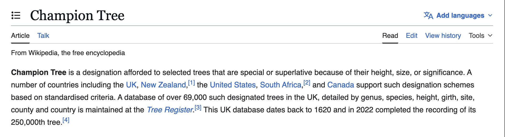

A conversation with Francis from Champion Trees

It was a sunny morning in March, on a Friday, I had just come back from a protest at uni. There was something quite silky and liberating about that morning and I asked the gardeners of the park near my house if they wanted to share a coffee. They told me about the political absurdities of the Olympics: they were asked to remove trees to plant more native species, then were told to remove them after the games. They also told me all the dog shit was making the ground too acidic and some plants didn’t survive it. Yummy. These conversations led me to be invited to the inauguration of an “Arbre Remarquable”. In English, it is called a Champion Tree.A year later I would come to meet Francis, the singer/lyricist/guitar of the South African band Champion Trees. It’s all starting to feel very conspiratorial.
I don’t really remember how I started listening to Champion Trees, I just remember showing their music to all my friends and saying, “no but listen for real like they’re really good!!” and other harassment practices I have put in place. When I texted the band’s Instagram at 8am, hoping for an interview, I was reasonably expecting to be ghosted.
If you are currently dating and want to feel stronger in the inevitable hurt of unreciprocated attraction, I would highly advise building a music website and sending DMs to people who will never answer you, because, to be fair, your website barely works on phone and looks scammy. But Francis from Champion Trees did answer, maybe because he loves to be scammed but this is none of my business. Turns out, part of the band is in London, the drummer is in South Africa, and Francis is in Paris: my luck!!!
I got to meet him in person on a very rainy and cold day, and I felt self-conscious about the fact he had needed an umbrella to meet some stranger with a blog; but actually he was going to a concert after so I didn’t take the efforts of his presence too personally.
I know Francis is reading this and maybe the rest of the band so please, do not take what I’m about to say the wrong way. I’ve had a good share of experience of male poets, writers and musicians and I think it will not be a spoiler to anyone when I say their obsession with themselves often takes over. ESPECIALLY when they’re actually good at the art they’re making. So when I knew I was meeting the lyricist of a band I had noticed for the great writing, I had prepared myself for an inflated ego and a rehearsed nonchalance.
And you know what, there is no better feeling than being wrong about this. And I was.
I learned that Champion Trees started in South Africa and that they recorded their first clip in a municipal garden. We talked about the band’s deep relationship to place, and how they made an album long distance, with drums that couldn’t be re-recorded. Francis told me the name doesn’t mean anything special anymore, but I do. Champion trees are a recognition of the community for a long-standing and beautiful presence. If that’s not a bold statement about place, what is (my colleagues at work tell me I’m a conspiracy theorist). He told me about his girlfriend and how she’s a much better poetess (when can we see the poems??) and how he’s inspired by Sufjan Stevens and Joni Mitchell. He told me he only found out when the album got out and it reached a wider audience that his songs were ironic and funny, but also deeply melancholic. My questions were messy and we spun around many things quickly, but I keep a very soft memory from this interaction. Oh and I wanted to ask “Do you wear a t-shirt that says Paris so people know you’re not from there” but I forgot.
“It was a strange way to make an album, but it worked.”
Pink Ipod: My first question: what is the first song you ever wrote?
Francis: I tried for three or four years to write stuff, but none of it ever made it. When we started playing together in our first year of university, in 2018, we basically needed our own songs to get gigs and to record. So I started writing a bunch. None of it was good, but we still recorded it and used it to get gigs.
PI: Did you write before you wrote songs?
Francis: I was trying to. I was first very into music in high school. I did music as a subject and played mostly jazz. But towards the end of high school I got much more into English literature, reading and poetry. It took me a while to try writing myself. When we had the band it wasn’t as daunting with a few people around. You could just try, and it wasn’t obviously you writing the songs.
PI: So you’re the only one writing the songs?
Francis: Yeah. The process is almost always that I write the underlying song and the lyrics, but the arrangement process is very collaborative. I’ll have songs I like that others might think aren’t very good, and then we won’t do them. It’s a nice process. I like taking a lot of care with the underlying song and having control over the lyrics, but the arrangement process can be overwhelming because of the sheer amount of options. So it’s nice doing that collaboratively, because people come with ideas and it just happens somehow.
PI: Because you’re also the singer, right?
Francis: Yeah.
PI: Do these arrangements let you experiment with your own voice in ways you wouldn’t have alone in your room, or interpret the text in a new way?
Francis: Maybe. But with these last songs, because we weren’t all together for a long time, living all over the place, it was quite singer songwritery. I wrote the songs, then we got together to arrange them, but we were careful to build the arrangements around the songs rather than scratching them out and turning a slow song into a fast one. Not everyone was even in the same place. Langa Dubazana, the drummer, was in Cape Town the whole time, and the three of us were living together in London with two other friends. We worked on the laptop, sending things back and forth, with Langa trying some drum parts.
I told you, long distance works.
Francis: It was a strange way to make an album, but it worked.
PI: It was sort of patchwork almost?
Francis: Yeah, very patchworky. It worked out, but it was a bit stressful at times. Well, not stressful, because it didn’t feel particularly high stakes, but sometimes it was: how are we going to do this?
PI: It’s funny, because your album does not sound patchworky to me.
Francis: Our friend who mixed it, André Hough, is a really good mixer, and a lot of the reason it doesn’t sound patchworky is because of him. We paid a lot of attention to the arrangements, but he really made it sound amazing.
PI: In a way, the fact that you were all split brought even more attention to the arrangement process?
Francis: Definitely. It helped that the three of us were living together: me, Lex the bass player, and James the violinist and keys player. We’re all cousins, and we lived together in London. Our good friend Mike grew up in the same town as me, just outside Cape Town. I knew him as a kid, not very well, but we went to the same youth jazz program every year and became good friends in high school. We’d never been in the same band, but he was living in London. We were working on these songs, so we said, why don’t you come play a bit with us, and he added some stuff. Then we met Michelle, the clarinetist, through mutual friends at the beginning of last year. She watched one of our shows in London and said she’d like to join. We were about two thirds through the album. She did some stuff and it worked really well. Sorry, I got carried away. The main point was that we demoed a bunch of stuff, then had one day when Langa went into a studio in Cape Town with André to record drums. We only had that one day, because of Langa’s schedule and because we didn’t have a huge budget. In the weeks before, I was going back and forth with Langa over what drum parts to play, because he knew none of the songs, or it had been a few years since we’d played together. It was make or break at that early stage, because we had to know broadly what the arrangement would be and work around that. Some songs, like Higher Taste, the fourth on the album, originally had a drum part, but then we wanted to give the song more space, so we left the drums off. In the end it created an interesting dynamic.
PI: So would you say it was a good creative limit, the drums being a unit that could be used or removed?
Francis: Yeah, in a way. It was cool. We have a first album that we made when we were all together in the same place with another friend who recorded and mixed it.
PI: Now 3000?
Francis: Now 3000, exactly. For that, we got together for a week, arranged all the songs, set up in a house and recorded it over a week. That was it. There were time limits, so we didn’t pay nearly as much attention to detail or arrangements. It was just: everyone needs a part to play, so play it. Those songs were a lot scrappier. We’d never recorded much ourselves before this recent album and we bought a bit of cheap gear to do it. I had read online about the cheap microphones Sufjan Stevens used to record Michigan and so we just bought the same ones and figured it out from there. Apart from the drums, it was all recorded in our living room in London. In a way there were no limits, because we could do it over and over and try different things. Lex is very good. He would cut things off or make clear decisions, whereas James and I were quite neurotic about it. Mike and Michelle were good at staying clear headed and just played instinctively really. It was a very pleasant process, even though it was unusual.
PI: I was wondering if you could give a short geography of the band. Not where you are, but in the liner notes for Now 3000 you mention the Ardene Gardens. Could you explain a bit more? I feel like place is a big part of your band.
Francis: Absolutely, and it’s almost become more so. When you live where you’re from, you don’t think about it too much. It’s just part of your life. When you move somewhere, and I’ve now moved twice in the last four years, I find myself thinking about these places a lot more. I’ve always loved music where, even if the people are from a place no one knows about, they mythologise things around them. The Ardene Gardens is a municipal garden in Cape Town. I got the name from there because they have a few champion trees. I saw it on a sign, read a bit about it, and thought it was a nice neutral term. That’s why we chose it.
PI: Can you tell me more about champion trees, the name of your band?
Francis: If an individual tree is significant enough, it gets protected like a building gets protected, and is given champion tree status. I don’t really think about the name much anymore, but I like the balance of the phrase. Sorry, I didn’t really answer your question about place, but it matters a lot. On this recent album there’s still lots about Cape Town, and the next album specifically will be very placey, for better or worse. We’ll see.
PI: There’s definitely a shift between Now 3000 and A Duck’s Water Off My Back. I feel like the three new members brought in a lot of musical possibilities. Was that something you had in mind when you made Now 3000, or did it naturally change your music to have them?
Francis: We weren’t looking too far ahead when we made Now 3000. It was just: we’ve got two guitars, a bass and drums, and we worked within those limits. This time it was a case of different personnel. I had these songs, we were trying to arrange them, and we really wanted Mike to play. James tinkers with tons of instruments, so we wanted him to do a bunch of stuff. Then we met Michelle and she wanted to play. Sufjan Stevens is a big inspiration of mine songwriting and arrangement wise, and I’ve always loved other instruments beyond the usual bandy ones. Mike and I come a bit from a jazz background, Mike more so than me. So when new people came into the picture it was exciting to have these options. There wasn’t much planned. We knew there were these songs we wanted to work on, and these were the people we knew in a place where we didn’t know many people musically. We just worked with what we had. Those three completely changed it. They lifted the whole thing.
PI: Could you tell me more about the title of the album?
Francis: We didn’t have a title for ages. It was a wrong way roundism my grandpa used to say, because the expression is “water off a duck’s back,” an idiom in English.
PI: Meaning something like “I don’t care”?
Francis: Yeah, it means you don’t care, it didn’t affect me. My grandpa used to say it as a joke, but for some reason I thought of it. It’s evocative and has a nice balance, and it’s not too clear what it means, so it could suggest a few meanings. It seemed to fit the songs. Then there’s Jayshal Gajjar, who did all the artwork. I’ve been a long time fan of their work, and they’re also from Cape Town. When I thought of the title, the next thing I thought was that it would be amazing to ask Jayshal to do the artwork. That was a huge part of it. We were all so excited by what became the cover. It’s suggestive, childlike and weird. Their whole aesthetic is childlike but also deceptively serious. Jayshal is one of my favourite artists.
PI: I’ll dig into their work then. Maybe to go to your writing: I’ll give you my impression and you tell me I’m wrong. The title and artwork aren’t surprising, because there’s something humorous, mocking, maybe ironic about your writing. I feel like that ironicness shifts at the end towards something more authentic and connected.
Francis: Irony can be authentic.
PI: Yeah, I understand what you mean. There’s something very meta about your writing too. You write about your own voice. For me there’s something very literary about it. So, a real question: what are your specific literary inspirations? And how did you think about the order of the songs, the continuation, the feeling you wanted to convey?
Francis: Songwriting for me is a sort of literary thing. That sounds a bit ridiculous to say, but I love books and poetry so much. I kind of wish I was a writer. Let me talk about some songs specifically so I’m not just rambling. Two people I was reading a lot at the time were Virginia Woolf, a lot, and that comes through in the C. Market, Rondebosch Park song. I had read The Waves, one of my favourite books, and loved the way memory works there, where you’re not sure if you’re in the present or the past. I wasn’t actively trying to do that, but looking back I must have been quite inspired by it. And then Charles Wright, an American poet some music people may know through his association with David Berman from Silver Jews. I’ve been obsessed with his poetry for the last five years. There’s something wry about it, but you’re also not sure whether it’s funny or the saddest thing ever. It’s packed with layers. I’m not very good at speaking about this. This is the first time we’ve ever had any response to the music outside of our friends. I’ve often found the songs funnier than people seem to find them, or I was trying to be funny. It is definitely a melancholic album, but I wasn’t aware of how melancholic it would be perceived to be. It’s difficult when you’re close to it.
PI: Don’t be weirded out by the comparison, but it reminded me a bit of Nabokov. He writes with a very rich vocabulary, and in Lolita he’s quite humorous in a way that hides an all encompassing pain. Sometimes you get one or two sentences where the underground reemerges and you think, oh, that’s what he was trying to say. And it’s good that you say it’s unconscious, because I feel that’s the strength of your writing. I also love the line about a shirt that says Australia. Is there a specific subject you feel keen on writing about? The humour, but also the disturbance, is there something that sparked that?
Francis: It’s hard to say. Place is a big thing. Landscape is a big thing for me. But I don’t often know what my intentions are when I’m writing. Some lyric just happens. “I wear a shirt that says Australia,” for instance: my girlfriend had a tourist shirt that said Australia, and I thought it was funny that when you wear these tourist shirts, it’s an indirect indicator that you’re not from the place the shirt names. In London people always think you’re Australian if you’re South African. Mike got asked three times in one week if he was Australian. I really liked the first few lines, they came out of nowhere, and then I kept rambling on. I wish I could set out with the intention of writing songs on these subjects, but it just happens and then you see it in reverse. You think, oh, that was clearly what was preoccupying me.
PI: I ask this to be honest, because I saw an article about your band from a high school, I think about Now 3000, and the writer said it feels like a high schooler writing with big words without fully knowing what they mean or the experience behind them. And I strongly disagree.
Francis: I think I know the review you’re talking about. It’s a strange one. I read it, but I don’t really know.
PI: That’s why I wanted to ask whether you have such an intentional, upfront relationship with words. I’m glad you’re saying you don’t, because from that article I wondered if they’d talked to you and you’d told them that.
Francis: No, no. This is our first ever interview. Wait, so what did it say? That I just use words?
PI: It was meant as a compliment, but they said the richness of your vocabulary felt almost high schooly, as if the experience didn’t match the depth of the words. And I thought, no, that’s not true.
Francis: I don’t know how to comment on that. It’s hard to tell the relationship between experience and words.
PI: I wanted to see if you had a very intellectual thought about your relationship with writing, but from what I see it’s more instinctual.
Francis: I think so. There’s not too much I can do intentionally with songwriting. I’ll get the idea and get as far through it as possible at first, and then sometimes songs take ages and it’s just patchwork, but you finish them. You just know if a line works.
PI: I wanted to go more in depth into the songs. You have a song called Richard 2. On Now 3000 there’s “So Says Richard.” How are they connected?
Francis: For a while I got into writing follow on songs to other songs I liked. I don’t know if you know the Joni Mitchell song “The Last Time I Saw Richard,” the last song on Blue. “So Says Richard” was a bit about that, as a continuation, and a bit about various middle aged men I knew. I don’t know if it’s similar in France, but in South Africa you often get advice from the older guys, sort of stupid advice. So I made up a song of stupid advice from a character loosely modelled on the Joni Mitchell one. The last one, Richard 2, started, weirdly, with me watching an old American game show on YouTube where Buster Keaton, the silent actor, was a contestant. It was a “Who Am I” game, and he asked something like, am I a living American blonde. I started from there, and it turned into a follow on song with the Richard theme. It was kind of a stupid song. It nearly didn’t make the album, because it was quite abrasive at one point and we needed to soften it so it worked with the others. I’m really happy with how it turned out, but it was the last thing we finished. The idea is of course that it’s from the perspective of the Richard guy, rather than about him.
PI: Are there songs you made that didn’t fit the album and you kept for later?
Francis: There was one that got canned because people didn’t think it was good, and I’m relieved, because now I agree with them. Going in, I had a weird attachment to it. There were a few lines I thought were good, but it would have tipped the whole thing over. We ended up with a delicate balance. We had this next album almost completely written by the time we started recording this one. There was a big backlog of songs, and we worked in chronological order, getting the earlier stuff done. Some songs, like Higher Taste, were written in 2021. It’s a strange thing: you put it out and it’s this new thing, but to me it’s old.
PI: Did the mix of old and new still work together as a concept?
Francis: Enough, I think. I thought it was a strong enough song to keep around and have out in some capacity, and we found, in a mixtapey way, that we got it all together. It was a little unconventional.
PI: Because some of you were apart, when you discussed the album cover or how to present it, did you do Zoom calls, or is one of you more specialised in those things?
Francis: The three of us were in that house for the whole process, and a lot of the practical discussions just happened there. Michelle jumped in towards the end, Mike was relaxed about everything, and Langa was relaxed too. We’d chat amongst ourselves. Once we knew Jayshal was doing the cover art, I mainly liaised with them and then cleared the ideas with the others.
PI: I wanted to talk about the liner notes, because I wasn’t aware they could exist. How did they come about? You said you always wanted to be a writer. Was that your way of incorporating writing?
Francis: A bit, yeah. I don’t know if you like Belle and Sebastian, but for the first two albums, Tigermilk and If You’re Feeling Sinister, Stuart Murdoch did short story liner notes. I was inspired by those. I’m actually seeing them in a few weeks in Paris. The liner notes for our first album were just a long prose poem I wrote when I was trying to write poetry that year, and I managed to relate it enough to the album to add it in. This recent one I came up with the day before. It was a lot shorter, I put less thought into it, but it references something in a George Herbert poem.
PI: Now to questions about the future. Related to the liner notes, do you ever plan to write a book?
Francis: It would have to just happen. No, and I don’t think I’d be any good. I find anything longer than poetry very intimidating, and poetry is a lot more exposed and much more difficult than songwriting to do well. Poetry is a bit like free climbing, and songwriting is like walking down the road. It’s more intuitive. My girlfriend writes poetry. She’s really good. But I’ll stick to songwriting.
PI: Do you feel there’s a part of you that hides in music?
Francis: Do you mean I’m not revealing myself completely in the songs, or that I’m taking refuge in music?
PI: More not revealing yourself completely, compared to something like poetry, where you’d be at your deepest vulnerability.
Francis: Maybe. I don’t think it’s necessarily more vulnerable. From a purely technical perspective, it’s harder to get right. It’s not about whether I’d be personally embarrassed by poetry. The lines are just there by themselves on the page, and it can easily be really bad. With songwriting, the song suggests the right line length, the forms are there, and the music can distract from a bad line here and there. It’s less easy to get wrong.
PI: I was also wondering about that future album. You said it would be quite a shift.
Francis: Place comes into it a lot. It’s a double album, at least in its current form, probably double the length of A Duck’s Water Off My Back, unless some of it turns out not to be good. I’ve just finished the last of the songs, and now we’re moving into working on it together. It’ll continue being, at least musically, mostly us using what we have and working intuitively, trying to realise the songs in the best way together. There’s more of a strand running through all the songs this time, aside from it just being my lyrical voice. A lot of those songs play between each other a bit more. It’s hard to say exactly how without getting too detailed about things people won’t know until it comes out.
PI: To my knowledge, your only music video is California. Did you want to do any more for the next album?
Francis: For A Duck’s Water Off My Back we were going to do something with a friend, but the timing didn’t work out, and ultimately we were happy there wasn’t much visual stuff for the album, because we didn’t have strong visual ideas. We didn’t want to just do one where we’re standing around or walking around, and we didn’t want to take away from the lyrics. It worked well with the artwork being vague and suggestive. Sometimes it’s better to not have too much visual stuff attached and let the songs have their own visual connotations for different people. Maybe we’ll do something in future. I don’t think it makes much difference to whether people check it out.
PI: Do you know how people find your music?
Francis: We got a review on a biggish music blog called Outside Noise on Instagram a few days after the album came out, and that completely changed the trajectory. Before that it was really only friends and a few people we didn’t know. The response has been extremely surprising. It’s the first time we’ve had people we don’t know coming to the shows and listening.
PI: Are you going to do a show in Paris?
Francis: We want to organise something, probably later in the year, after the summer.
PI: If you had no budget limits, nothing, what would you want to make as a band? What’s your dream project, whether a residency, an album, a music video, a concept or a film?
Francis: With this next album, because it’s quite sprawling, it would be a dream to be all together for a month uninterrupted, out of place. I don’t think it’s going to happen, but it would be amazing. I don’t know whether it would necessarily make it better. My main hope is that we keep making albums we like. I don’t know how ambitious we are in terms of whether more people will listen. I just hope we keep coming up with songs we’re excited about. On a practical level, most of us are 27 or 28, so everyone has jobs or is studying, and it’s a lot more complicated than it used to be. But it’s something we get a lot of joy out of, so it’s worthwhile.
PI: Are your circles, your parents, supportive of that potential professionalisation?
Francis: Yeah, very much. It’s never been on the cards enough to really know what people think, but most of our parents are quite interested in what we’re doing. Our uncle is hugely supportive. He’s a huge music fan and has always been encouraging. He’s very excited about the recent album and comes to all the shows.
PI: Is he the one who introduced you to music as a child?
Francis: My parents initially, but I’d see my cousins in the summer and he was always on to some new album. He got Lex and me into some interesting music. By the time we were 15 or 16, we’d found a lot of stuff online ourselves.
PI: What are your, and the band’s, main musical inspirations? You mentioned Sufjan Stevens and Joni Mitchell.
Francis: It’s hard to speak for everyone else, because there’s a huge range. From a songwriting perspective, there’s a lot of music I love that doesn’t necessarily inform my songwriting. I love loads of South African jazz, but I don’t know how much that’s shaped my writing. When I was getting into songwriting, the main inspirations were Joni Mitchell, David Berman from Silver Jews, Stuart Murdoch of Belle and Sebastian, and Matt Field of Beatenberg (and M Field), a South African band. Matt is an incredible songwriter. Hearing them made me hugely excited about what you could do with songwriting, because his writing is very literary, layered and amazing. And Mount Eerie/Phil Elverum too. This was all around the time I was 18. A lot of the important influences were also writers and poets, people like Finuala Dowling, a poet from Cape Town, and Virginia Woolf.
PI: Do you have a label, distributor or manager yet, or is it all DIY?
Francis: It’s all DIY. We just made up a name for the label and do pretty much everything ourselves. We’re busy with a vinyl pressing, which has been fun. We’ve never been on a label and have largely self-managed, apart from having booking agents here and there.
PI: My last question, and then I’ll leave you alone. If you had to make an album very far from any genre you’re doing now, what would you make?
Francis: I wish I was a better jazz player than I am. I’d love to play more but was never very good when I did play and am much worse now. It’s never going to happen, but it would be cool. I love hip hop, but I don’t know whether I’d want to make it myself. The music for me has always been quite incidental since I started writing songs. The underlying song and lyric is the main thing I put effort and thought into, and the music has always been: these are the four or five other people playing, and we’ll do what they do. Genre wise, the underlying song has a bit to do with it, but I never think really too hard about that.
go and listen here